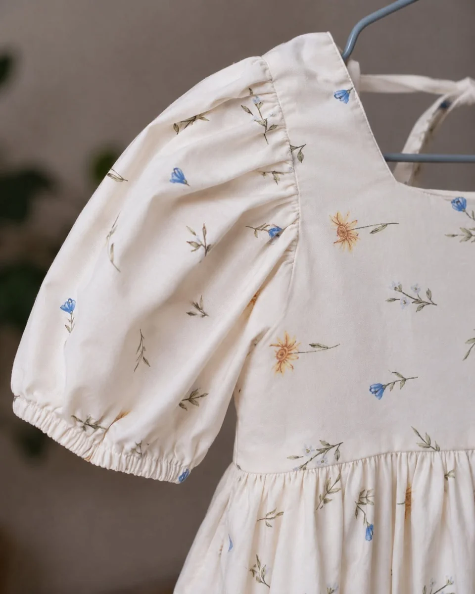

Silver reflections
Evening & occasion
A fitted evening dress with reflective embellishments.
An independent dressmaking atelier
ATELIERMAONI
Made-to-measure clothing crafted in Tbilisi, from everyday dresses and eveningwear to bridal, traditional and children’s garments.
Made to measure. Made for you.
A few pieces from our atelier
01 — 06Different silhouettes. Different occasions. Always personal.
Evening & occasion
A fitted evening dress with reflective embellishments.

Evening & occasion
A yellow off-shoulder dress with a flared hem.

Everyday & separates
A navy jacket and skirt with a contrasting white collar.

Traditional
A burgundy and taupe garment with ornamental detailing.

Bridal
A white bridal gown with a long train.

Children’s clothing
A floral children’s dress with puff sleeves.
What we create
MAONI / ATELIERDresses for celebrations, from simple silhouettes to intricate designs.
Individual dresses and coordinated pieces, shaped around your preferences.
Custom garments, coordinated costumes and group orders for children, with attention to every detail.
Personal bridal designs and traditional garments, as seen in our work.

The atelier
Atelier MAONI creates clothing to individual measurements and personal design preferences. From an understated everyday piece to a detailed evening dress, each garment begins with you.
A thoughtful silhouette, a carefully considered detail, a fit that feels your own. Visit our atelier in Tbilisi to talk about what you have in mind.
Contact usLet’s make something personal
Tell us about your idea. We’ll talk through the possibilities together.